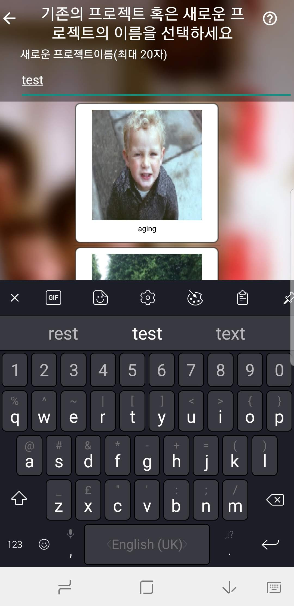
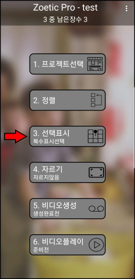
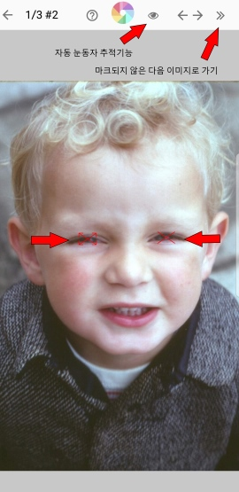
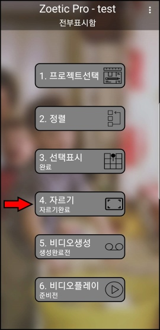
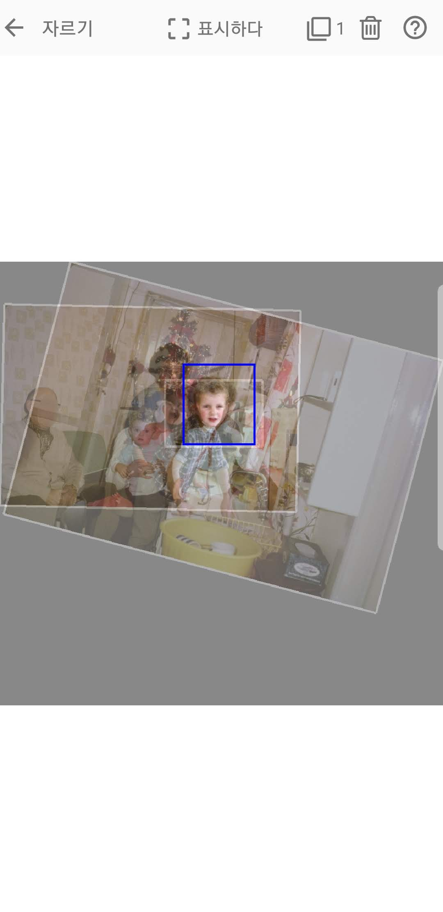
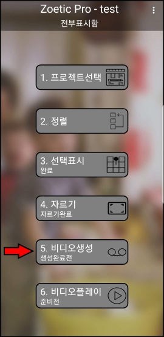
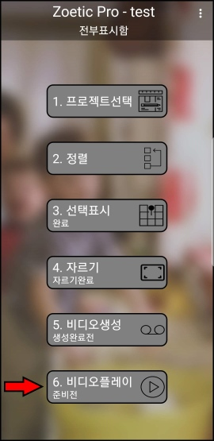

☰ |
 |
hidden text |
|---|
☰ |
|
hidden text |
|---|
Choose images from your favourite gallery/photo app and share them with Zoetic: 좋아하는 갤러리 / 사진 앱에서 이미지를 선택하고 Zoetic과 공유하십시오:


Once the images have been received by Zoetic, enter a name for the project: Zoetic에서 이미지를 받으면 프로젝트 이름을 입력하십시오:
 From Zoetic's main screen, tap Mark Points and then for each image enter the two alignment points. If you are using images of faces, you can use the eye detection function to automatically enter the alignment points (n.b. it doesn't always work): Zoetic의 메인 화면에서 Mark Points를 누른 다음 각 이미지에 대해 두 개의 맞춤 지점을 입력하십시오. 얼굴 이미지를 사용하는 경우 눈 감지 기능을 사용하여 자동으로 정렬 지점을 입력 할 수 있습니다 (n.b. 항상 작동하지는 않음):   Once the images have been marked, tap Crop to specify the area of the images to be used to generate the video: 이미지가 표시되면 자르기를 눌러 비디오를 생성하는 데 사용할 이미지 영역을 지정하십시오:   Finally, tap Create Video to create the video and Play Video to enjoy the results: 마지막으로 비디오 만들기를 눌러 비디오를 만들고 결과를 즐기려면 비디오 재생을 누릅니다:  A video showing an expanded set of these steps can be found 이러한 단계의 확장 세트를 보여주는 비디오를 찾을 수 있습니다. here. 이리 The output generated by the project can be found at 프로젝트에서 생성 된 출력은에서 찾을 수 있습니다 this point 이 점 in the video. 동영상에서.
| Back 뒤로 | Contents 내용 | Further discussion |
|---|